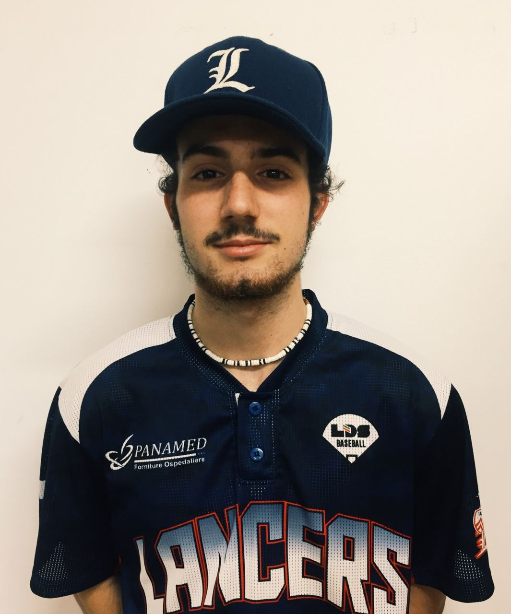

Ufficializzato lo staff tecnico, capitanato dal livornese Alessandro Barbieri che guiderà la Serie B nella stagione 2019, è giunto il momento di svelare i primi movimenti di mercato che andranno a comporre la rosa di questa squadra.
Tra le necessità emerse durante l’ultima stagione c’era quella di trovare un catcher che aiutasse Becattini dietro il piatto di casa base, in questo modo il giovane atleta lastrigiano torna disponibile anche in altri ruoli, come esterno o battitore designato.
Il DS Ciappi, per far fronte a questa necessità, ha puntato sulla freschezza ed il talento del giovane Flavio Repetti, livornese doc classe 2001 già conosciuto dai nostri tre i tecnici.
Rosellini e Barbieri infatti hanno allenato Flavio nella stagione 2016 portando la squadra cadetti del Livorno Baseball al titolo Regionale e alle successive fasi finali perse contro Ronchi; con Ciappi invece il giovane atleta ha condiviso il Torneo delle Regioni 2018 nella categoria Senior League.
Per Repetti questa non è l’unica esperienza con la maglia rossa della Toscana, son ben quattro le partecipazioni al TdR, nello specifico nel 2014 con la categoria Ragazzi, nel 2015 con la categoria Allievi, nel 2017 con la categoria Cadetti e quest’ultima nel 2018, esperienza condivisa con il nostro lanciatore Menoni.
L’esordio in Serie B con la maglia amaranto è avvenuto nel 2017, pochi turni utili per assaggiare il primo campionato Senior per poi scendere in campo con maggiore frequenza nel campionato 2018; ottima stagione per Flavio secondo della squadra in media battuta con .324, 24 valide colpite, 10 RBI e una media arrivi in base di .451.
A soli 17 anni, Repetti, si presenta come un buon prospetto che può giocare in quasi tutte le posizione del campo, fa della velocità la sua caratteristica principale supportata da un’ottima tecnica; ringraziamo la società Livorno Baseball, nella figura di Franco Grappolini, per la fattiva collaborazione nella cessione del prestito.
Tra le fila dei Lancieri si aggiunge un altro giovane di talento, questa volta proveniente dalla Repubblica Dominicana, in Italia da oramai 6 anni; Maicol Belnabe si è unito alla squadra da alcuni mesi e ha subito mostrato voglia di far bene e attaccamento al gruppo.
Maicol ha 23 anni ed è originario di Oviedo dove ha mosso i primi passi sul diamante, successivamente si è allenato per ben 8 anni nel Camp istituito dal leggendario Moises Alou; tra le sue esperienze formative vanta anche alcuni mesi passati nella franchigia dei Kansas City Royals.
Torres è dotato di un fisico atletico e potente, potenza che ha mostrato in particolar modo durante gli allenamenti di battuta; il suo ruolo primario è all’interno del diamante come interbase e seconda base ma considerata la giovane età e le caratteristiche fisiche il suo utilizzo potrebbe essere diversificato.
I due nuovi innesti si sono giù uniti al gruppo che ha ripreso la preparazione per la stagione 2019 da qualche settimana; le novità come sempre non finiscono qua e presto arriveranno nuovi aggiornamenti sul mercato e tutto ciò che ruota sul mondo Lancers.
Vi ricordiamo, per chi non lo avesse ancora fatto, di prenotarsi per la tradizionale Cena di Natale dei Lancers sabato 22 Dicembre, anche quest’anno con una ricca lotteria e regali per tutti i nostri atleti.